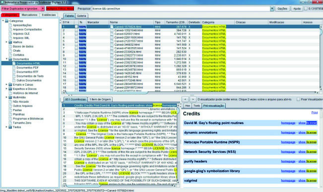

Finalizada a duplicação forense do material apreendido, o próximo passo é a análise propriamente dita dos vestígios digitais. Nesta etapa, o Perito Criminal poderá realizar diversos procedimentos, como recuperar arquivos apagados, decifrar arquivos criptografados, indexar conteúdos, analisar registros ou sistemas diversos, enfim, todos os procedimentos necessários para tentar elucidar o crime sob investigação. Esta unidade apresenta as principais etapas envolvidas na análise de vestígios digitais que, didaticamente, podem ser agrupadas em: extração, processamento, filtragem e exame. Ao final da unidade, serão apresentadas algumas ferramentas capazes de executar essas etapas de forma integrada. No âmbito da Perícia de Informática da Polícia Federal, as práticas recomendadas para a realização de exames periciais estão descritas no “MANUAL DE EXAMES PERICIAIS EM INFORMÁTICA”, publicado pelo Instituto Nacional de Criminalística.
De posse da cópia da mídia a ser examinada, a primeira etapa da análise do vestígio digital é a extração. Nessa etapa, todo o conteúdo da mídia é varrido e recuperado, incluindo o sistema de arquivos e eventuais áreas não alocadas. Com isso, todos os arquivos ativos (contidos ou não dentro de outros arquivos) e apagados são disponibilizados para a etapa seguinte. Dois processos principais ocorrem nessa etapa: a recuperação de arquivos apagados e a expansão de arquivos-contêiner.
Muitos usuários pensam que, ao apagar um arquivo, limpar a “Lixeira” ou mesmo formatar um disco rígido, eles estão excluindo definitivamente o dado da mídia. Entretanto, em nenhum desses casos isso ocorre. Ao realizar qualquer um desses procedimentos, o conteúdo sendo apagado (ou formatado) permanece fisicamente armazenado no disco rígido até que a área ocupada pelo dado seja reutilizada. Apagar definitivamente a área ocupada pelo arquivo no disco gastaria tempo considerável do sistema operacional e do disco rígido propriamente dito. Em vez disso, o sistema operacional adota um método mais prático e otimizado que consiste em simplesmente marcar como “livres para uso” tanto os blocos ocupados pelo arquivo apagado como a entrada correspondente ao arquivo na tabela do sistema de arquivos. Dessa maneira, quando um arquivo é apagado, toda a informação relativa a ele permanece praticamente intacta no disco. Esses elementos são apenas indicados como “livres”, mas, como essas informações permanecem no disco, é perfeitamente possível recuperá-las. Algo importante de se notar é que a área de um arquivo apagado, que fica marcada como “livre”, passa a fazer parte do espaço livre do disco rígido e está sujeita a ser ocupada, no todo ou em parte, por qualquer arquivo que seja gravado posteriormente no disco. Assim, um bloco livre pode ter sido utilizado por diferentes arquivos e, muito provavelmente, possuirá conteúdo remanescente desses arquivos. Dessa forma, o conteúdo de um arquivo só será realmente eliminado quando outro arquivo sobrescrever toda a área do disco anteriormente ocupada pelo arquivo anterior. Conclui-se, portanto, que quanto mais recentemente um arquivo for apagado, maior é a probabilidade de que ele seja recuperado, já que é menor a chance de seu espaço ter sido sobrescrito por algum arquivo gravado mais recentemente. Há, basicamente, duas abordagens que podem ser empregadas na recuperação de arquivos apagados: uma baseada no sistema de arquivos e outra baseada na assinatura dos arquivos. A recuperação pelo sistema de arquivos se baseia nas entradas da tabela de arquivos marcadas como “livres”. Como discutido, nessas entradas ainda estão registrados os metadados dos arquivos apagados, incluindo a localização dos blocos ocupados pelos arquivos. Assim, utilizando software especializado, é possível ler o conteúdo desses blocos para recuperar o arquivo excluído. Não sendo possível recuperar um arquivo utilizando o próprio sistema de arquivos, o Perito Criminal pode tentar a recuperação baseada na assinatura. Essa técnica, também conhecida como data carving, realiza uma busca por todo o disco rígido procurando sequências específicas de bytes que indicam o início de certos tipos conhecidos de arquivos. Assim, esse modo de recuperação irá recuperar todos os arquivos de determinado tipo e cujas assinaturas ainda estiverem gravadas no disco. Como esse método não utiliza as informações presentes no sistema de arquivos, ele não irá recuperar os metadados, tal como o nome, dos arquivos. Além disso, arquivos que não possuem uma assinatura em seu final ou arquivos que estejam fragmentados (alocados em blocos não contíguos) podem ser recuperados de forma parcial.
Existe um grupo de arquivos conhecido como arquivos-contêiner. Esses arquivos nada mais são que repositórios de outros arquivos. Como exemplo, podem ser citados: arquivos compactados (ZIP, RAR) e arquivos que armazenam mensagens de e-mail (PST, NSF), entre outros. Nesse processo, todos esses arquivos são expandidos, ou seja, seu conteúdo é aberto e os arquivos contidos em seu interior são extraídos e disponibilizados para a próxima etapa.
De posse de todos os arquivos ativos, recuperados e expandidos fornecidos pela etapa anterior, o próximo passo é processá-los. Três processos principais ocorrem nessa etapa: o cálculo de hashes, a categorização e a indexação.
Nesse processo, o hash de todos os arquivos disponibilizados é calculado. Em geral, o Perito Criminal escolhe que tipo de função unidirecional de resumo deseja utilizar. Como será visto, ao se calcular um identificador único para cada arquivo, pode-se, por exemplo, determinar quais arquivos são idênticos ou quais arquivos já são – de alguma forma – conhecidos pela Perícia Criminal.
Nesse processo, todos os arquivos são identificados e categorizados. A identificação é feita pela assinatura e extensão dos arquivos. É nesse momento que se determinam inconsistências entre a assinatura e a extensão dos arquivos (um arquivo do tipo Microsoft Word renomeado de “Apostila.docx” para “Apostila. mp3”, por exemplo). Uma vez identificados, todos os arquivos são categorizados, ou seja, são separados por seu tipo: documentos, planilhas, bases de dados, imagens, vídeos, áudio, arquivos do sistema, entre outros. Arquivos que estejam criptografados também são identificados.
A critério do Perito Criminal, os arquivos do caso podem ser indexados. A indexação consiste em gerar um índice de todas as palavras encontradas dentro de cada arquivo analisado. A indexação é como um índice remissivo, ou seja, ao final do processo haverá uma tabela listando todas as palavras encontradas e suas respectivas localizações dentro do disco (pode ser no interior de um arquivo ou mesmo na área livre). Normalmente, a indexação é limitada a arquivos que contenham texto (não faz muito sentido indexar um arquivo de vídeo, por exemplo), embora existam ferramentas capazes de indexar textos obtidos por meio de OCR (Optical Character Recognition) a partir de imagens.
Uma vez que todos os arquivos foram extraídos e processados nas etapas anteriores, deve-se agora filtrar aqueles considerados irrelevantes e destacar aqueles que apresentam potencial interesse para a análise pericial. Em oposição à fase de extração, essa fase visa reduzir a quantidade de informações que necessitarão ser analisadas diretamente pelo Perito Criminal. Após a fase de extração, é comum um disco rígido conter milhões de arquivos, o que torna o processo de filtragem uma etapa essencial. Dois processos principais ocorrem nessa etapa: a redução e a pesquisa por palavras-chave.
O processo de redução consiste em tentar detectar e descartar da análise os arquivos claramente desconexos com o objeto do exame pericial. A base do processo de redução utiliza os valores de hash calculados na etapa anterior. Utilizando uma base de dados de arquivos conhecidos, pode-se comparar os hashes calculados com os valores tabelados e eliminar da análise todos os arquivos conhecidos e sem interesse específico para a análise (como os arquivos de sistema operacional, as bibliotecas de aplicativos comerciais, jogos, entre outros). Outra utilidade das bases de dados de arquivos conhecidos é identificar arquivos relevantes na análise, ao invés de excluir os irrelevantes. Assim, valores de hash de conjuntos de imagens pertencentes a casos já comprovados de exploração sexual de crianças podem ser usados para verificar automaticamente a existência desses arquivos na mídia examinada. Da mesma forma, bases de hash de arquivos maliciosos ou de programas que desempenham atividades muito específicas podem sinalizar de antemão que o sistema analisado pode ter sido invadido ou que era usado para a prática de esteganografia4, por exemplo. Utilizando-se de filtros, pode-se ainda ocultar arquivos com conteúdo duplicado (que possuem hashes idênticos) ou arquivos com tamanho zero, por exemplo.
A pesquisa por palavras-chave também visa reduzir a quantidade de arquivos Técnica de ocultar uma mensagem ou arquivo dentro de outro, aparentemente inofensivo (imagem, áudio, vídeo), tornando invisível a própria existência da informação secreta. a serem analisados. Ela consiste na busca de todos os arquivos que possuam um texto definido ou que obedeçam a determinado padrão. Assim, além de textos, a pesquisa por palavras-chave pode encontrar expressões diversas, como sequências numéricas de um número de cartão de crédito, por exemplo. Pode-se ainda utilizar caracteres curinga, que substituem qualquer outro caractere durante a busca. Dessa forma, se for necessário pesquisar pela palavra “luiz”, por exemplo, pode-se substituir a letra “z” pelo caractere curinga “?”. E, nesse caso, as ocorrências das palavras “luiz” e “luis” serão encontradas. A pesquisa por palavras-chave é agilizada se o processo de indexação na fase de processamento tiver sido executado. Dessa forma, a pesquisa irá consultar o índice gerado e todas as ocorrências da palavra procurada serão rapidamente encontradas. Esse tipo de pesquisa é conhecido como “busca indexada”. Caso o processo de indexação não tenha sido executado, a pesquisa por palavras-chave pode ainda ser realizada, mas cada busca acarretará na varredura exaustiva de todo o conteúdo da mídia analisada. Esse tipo de pesquisa é conhecido como “busca live”, e pode ser extremamente lenta. Uma das desvantagens da técnica de pesquisa por palavras-chave é a possibilidade de serem encontradas ocorrências em excesso da sequência pesquisada, gerando um volume muito grande de referências. Esse fator é acentuado em virtude da seleção de palavras muito comuns ou de expressões pequenas que aparecem em diversos aplicativos, dicionários, bases de dados e páginas da Internet, gerando resultados indesejados.
Finalmente, após extrair, processar e filtrar os arquivos, deve-se agora executar o exame propriamente dito. Essa etapa dependerá do tipo de exame sendo executado e requer a intervenção direta do Perito Criminal. Os dois processos principais a serem realizados são: a análise e a seleção. Eventualmente, pode ser necessário que arquivos sejam decifrados.
O processo de análise pode ser bastante simples ou extremamente complexo, variando desde uma inspeção visual de arquivos até a remontagem de um sistema ou banco de dados. Esse processo pode durar poucas horas ou até mesmo diversas semanas. O que determinará o que o Perito Criminal deve realizar serão os objetivos do exame e a quesitação apresentada. É nesse momento que o Perito Criminal realiza, por exemplo:
O processo de seleção visa agrupar e exportar para um formato inteligível os arquivos que possuem conteúdo probatório. Normalmente, os arquivos selecionados são exportados para uma mídia ótica ou podem ainda ser impressos no corpo do Laudo. Esse processo também varia de acordo com a quesitação apresentada. A resposta a um quesito pode ser, por exemplo, um conjunto de arquivos selecionados, ou o resultado de uma pesquisa por palavras-chave.
O cuidado com o sigilo dos dados vem aumentando consideravelmente à medida que os usuários passam a acumular maiores conhecimentos de informática, principalmente entre aqueles que utilizam meios digitais para cometer fraudes ou praticar atos ilícitos. Isso acaba se tornando um problema para o Perito Criminal, que precisa ter acesso a arquivos e discos rígidos que tenham sido cifrados. Excluindo casos muito simples (como senhas fornecidas pelo suspeito ou encontradas abertas em arquivos de texto, por exemplo), o acesso aos arquivos cifrados depende da recuperação da senha utilizada pelo usuário. Isso se dá por meio dos seguintes ataques: a) força bruta: método de busca exaustiva em que todas as combinações possíveis de determinado grupo de caracteres são testadas. Teoricamente, esse método pode encontrar qualquer senha. Entretanto, por ser muito ineficiente, só funciona de forma satisfatória para senhas curtas. Se o universo de caracteres escolhido for de apenas letras minúsculas, por exemplo, e uma senha de 5 caracteres for explorada, a primeira tentativa desse método será aaaaa, seguida por aaaab até finalizar em zzzzz; b) dicionário: método em que todas as ocorrências presentes em um determinado conjunto de palavras são testadas. O ataque em questão baseia-se no fato de muitas pessoas escolherem uma palavra simples do seu cotidiano como senha. As expressões a serem testadas não se restringem a palavras comuns encontradas em dicionários. Elas podem incluir, por exemplo, nomes de lugares famosos ou expressões de um filme; todas as palavras ou números encontrados em um disco rígido; informações pessoais (nomes de parentes, números de identificação, telefones etc.); Cada entrada do dicionário pode ainda ser alterada de acordo com regras pré-definidas. Por exemplo, todas as letras de uma palavra podem ser modificadas para maiúsculas, pode-se trocar “a” por “@” ou adicionar números no final das palavras; c) probabilísticos: métodos bastante complexos que visam determinar sequências com maior chance de terem sido utilizadas como senhas. Essas técnicas utilizam probabilidades condicionais e gramáticas especializadas, evitando testar senhas que dificilmente seriam memorizadas por um ser humano, por exemplo. Essas técnicas podem utilizar conjuntos já conhecidos de senhas, determinando padrões de utilização para um idioma específico. Além das técnicas para recuperação de senhas abordadas, também é possível explorar falhas nos algoritmos utilizados para a proteção dos arquivos. Utilizando aplicativos adequados, essas falhas possibilitam a obtenção da chave de acesso ao arquivo de maneira rápida e eficiente. Entretanto, a tendência é que sejam utilizados cada vez mais algoritmos fortes e robustos, dificultando explorar essas vulnerabilidades.
Visando à praticidade e produtividade, várias empresas e instituições investiram no desenvolvimento de ferramentas integradas para a área de Informática Forense. Tais aplicações agregam a funcionalidade de outras ferramentas projetadas especificamente para cada etapa do exame pericial. Assim, utilizando uma única ferramenta, é possível copiar o conteúdo de um disco questionado para um arquivo-imagem, recuperar dados apagados, realizar indexação, pesquisar palavras-chave, visualizar arquivos de vários formatos, gerar relatórios com linkspara os arquivos selecionados, entre outros. Em suma, boa parte dos exames realizados pode ser agilizada e parcialmente automatizada com o auxílio de ferramentas integradas, largamente testadas e aceitas. Um exemplo de aplicação com esse propósito é o Indexador e Processador de Evidências Digitais (IPED), uma solução de software de código aberto desenvolvida internamente na Polícia Federal. A proposta do IPED, a exemplo de outras ferramentas integradas, é cobrir as principais etapas da análise de vestígios digitais. Com o auxílio de um software para duplicação pericial, uma cópia integral ou uma imagem da mídia questionada é gerada e importada como “evidência” (vestígio) pelo IPED. Cada elemento de dado é importado pela ferramenta e processado, de forma a viabilizar a análise das informações. As vantagens prosseguem durante a fase do exame propriamente dito, permitindo que o Perito Criminal visualize a partir da ferramenta a grande maioria dos arquivos, crie filtros, faça pesquisas por palavras-chave, selecione os arquivos de interesse e os organize em categorias. Por fim, outra facilidade disponível no IPED é a geração de relatórios em HTML. Tomando por base a seleção efetuada, oIPEDgera uma estrutura de diretórios e páginas HTML prontas para serem enviadas anexas ao Laudo.

Figura 15 – Tela da ferramenta forense integrada IPED
Além do IPED, outras ferramentas integradas bastante versáteis são o Exterro FTK, o OpenText Forensic (EnCase), o X-Ways Forensics, o Magnet Axiom, o Cellebrite Digital Inspector e o Physical Analyzer. Detalhes da elaboração do Laudo (e seus anexos) contendo a formalização da análise dos vestígios digitais serão abordados no capítulo 8.